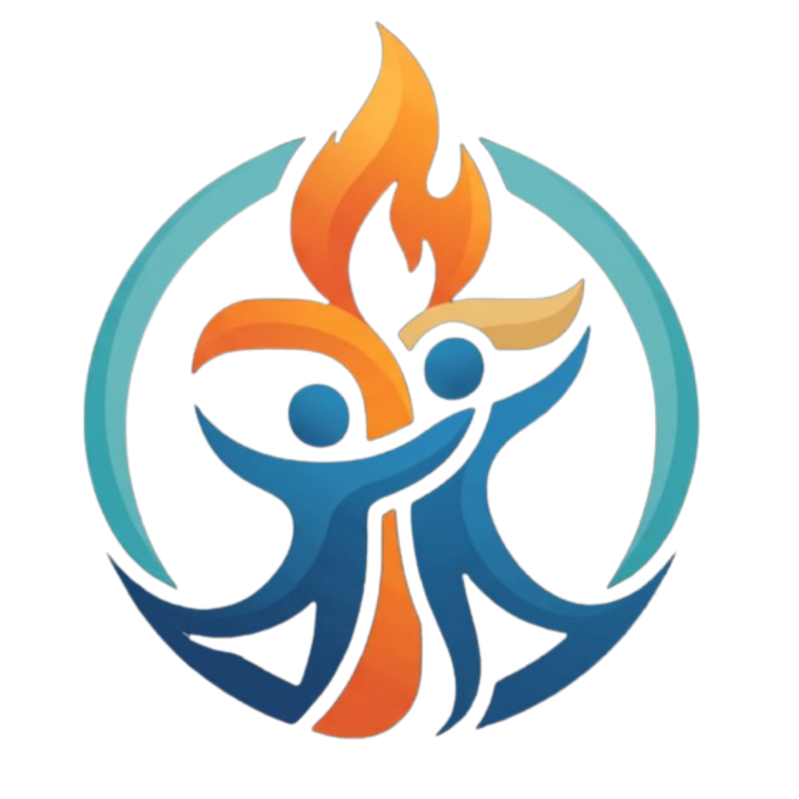

Sunday Worship Service
7:30 AM – 10:30 AM (IST)
AG Church Pazhayakada

style="width:55px;height:55px;object-fit:contain;vertical-align:middle;margin-right:10px;"> AG CHURCH PAZHAYAKADA 🔴 Watch Live | തത്സമയ ആരാധനA place to worship, pray and grow together in faith. Join our church family in person or online.
Join our services online. Our official YouTube channel will be linked here.
Add your church YouTube channel link to activate this section.
Gather with us in worship and prayer.
7:30 AM – 10:30 AM (IST)
AG Church Pazhayakada
Details will be announced soon.
Church programmes and special gatherings.
Sunday, 1 November 2026
7:30 AM – 10:30 AM (IST)
Speaker: Pr Maziha Das
New events will appear here.
Share a request with the church prayer team.
A private prayer-request form will be added once the church confirms its receiving email address and form service. Please do not submit sensitive information yet.
AG Church Pazhayakada
Kerala, India
Official phone number, email and map will be added after confirmation.